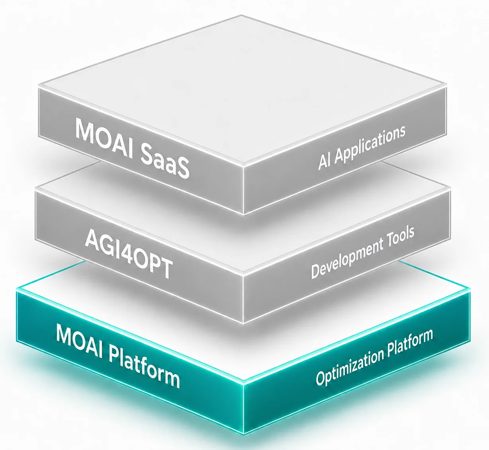
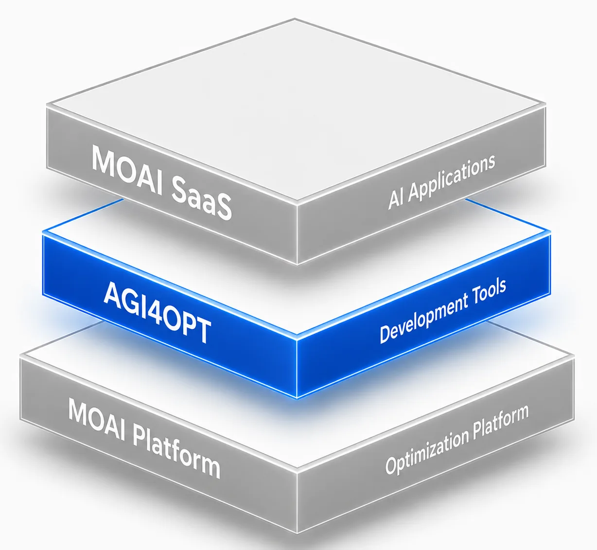
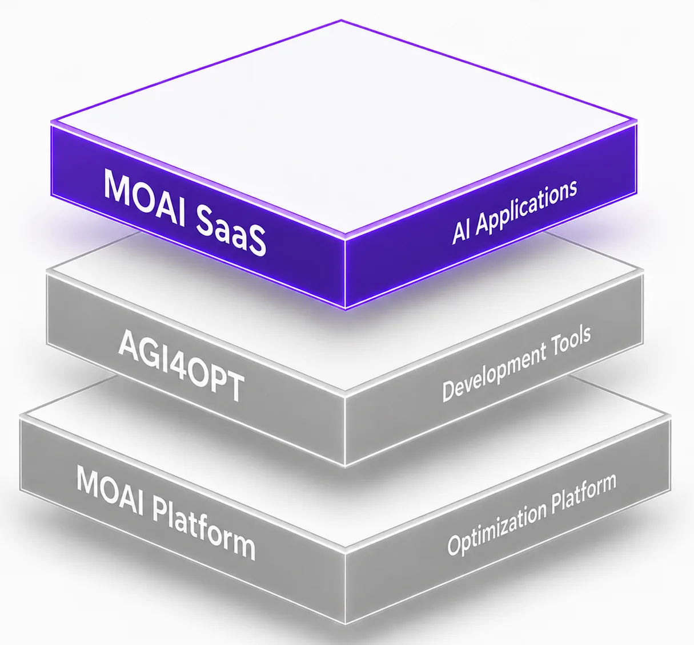
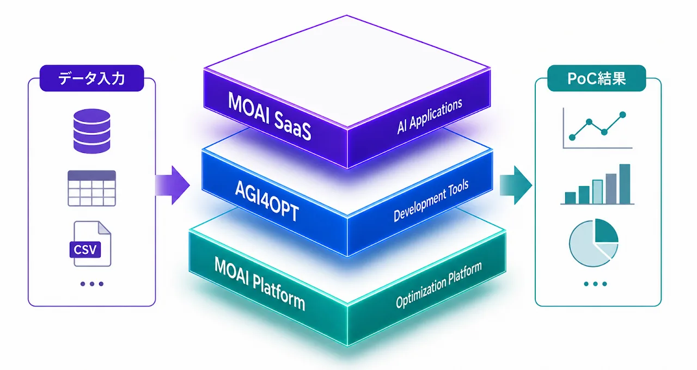
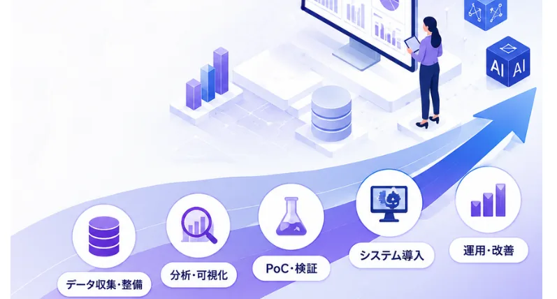

データから最適な意思決定へ
ビジネスの意思決定に
数理最適化とAIの力を
予測や分析だけでは終わらず、数理的根拠に基づく最適な計画を導き、意思決定の最適化・自動化を実現します。
What we do
MOAIが実現すること
予測や分析だけでは終わらず、数理的根拠に基づく最適な計画を導き、意思決定の最適化・自動化を実現します。
MOAI Labは、AIと数理最適化を融合した独自技術「MOAI Technology」により、生産・物流・サプライチェーン・エネルギー・人員計画・防災計画などの複雑な計画業務における意思決定を支援します。
Technology
MOAI Technology
MOAIは、MO（Mathematical Optimization：数理最適化）とAI（Artificial Intelligence：機械学習）を融合した技術です。
「予測してから最適化する」だけでは、融合とは呼べません。私たちは急速に発展するこの領域をMOAIと名づけ、実務で本当に効く手法を選び抜いて技術として確立しました。単体では届かなかった速度と精度で、意思決定を導きます。
Why MOAI
AI × 数理最適化
予測で終わらない意思決定支援
AIの予測と数理最適化を融合し、予測・分析だけでは終わらない、計画立案から意思決定までを最適化・自動化します。
実務に即したモデル設計
成果を左右するモデル設計力
30年以上にわたる数理最適化の研究・実問題への適用経験を持つメンバーの知見を活かし、理論と現場をつなぐソリューションを実現します。
300+ Algorithms
最適なアルゴリズムを提供
300以上の最適化アルゴリズムや各種ソルバーを活用し、課題に応じて最適な手法を選択。幅広い業務課題に柔軟に対応します。
ワンストップ支援
PoCから導入・運用まで伴走
MOAI Platform、AGI4OPT、MOAI SaaSを基盤に、短期PoCからシステム導入・運用まで専門家が一貫して支援します。
Software
MOAI Software

MOAI Platform
エンジニア（専門知識あり）向け
各種最適化ソルバー、SOTAアルゴリズムなど300+を搭載。独自の意思決定モデルを構築するためのコアモジュールを提供。最適化ソルバーの単体購入にも対応。

AGI4OPT
エンジニア、データ分析担当者向け
複雑で大規模な最適化問題も自然言語の指示で解ける。MOAI Platformを基盤としたAgentic AIが問題に応じて解法を選び、解を検算。企業ごとのニーズに合わせたエージェントスキルの追加・カスタマイズにも対応。

MOAI SaaS
現場担当者向け
MOAI Platform ＆ AGI4OPT基盤の即戦力アプリ。開発不要で導入でき、企業の固有課題に合わせた柔軟なカスタマイズにも対応。
AMPL
AMPL - Modeling Language for Optimization
AMPL（A Mathematical Programming Language）は、企業の複雑な意思決定を最適化するための世界標準のモデリング言語です。
Gurobi、CPLEX、Xpress、Knitro、SNOPT、HiGHSなど多様な最適化エンジンと連携できるだけでなく、業務条件や制約の変更に応じて最適化モデルを柔軟に拡張・変更できます。
AMPLによる最適化で、数十億ドル規模の業務価値を創出
Services
MOAI Services

MOAI Bootcamp
数ヶ月を要するPoCを数日で検証
MOAI Platform、AGI4OPT、MOAI SaaS、AMPL、最適化ソルバーなどを活用し、データに基づいてAI・数理最適化の効果を短期間で検証するPoCサービスです。
適用可能性や期待効果を迅速に評価し、導入リスクを抑え、本格導入に向けた確かな意思決定を支援します。

DX・AI導入コンサルティング
意思決定を変えるDXを構想から導入まで伴走
「何から始めればよいかわからない」「データが整理できていない」段階から、専門家が伴走します。データ収集・整備からPoC、システム導入・運用まで一貫して支援し、数理的根拠に基づく意思決定と計画最適化を実現します。
Solutions
MOAI Optimization Solutions
「8割がモデリング、2割がアルゴリズム」と言われるほど、最適化には実務理解と理論を融合したモデル設計が不可欠です。
私たちは最適化応用のプロフェッショナルとして、適切なモデル設計からアルゴリズム選定まで、確実に成果を上げるソリューションをご提案します。
News
- プレスリリース
「実務の最適化課題に役立つ2冊」― 数理最適化×AIの全体像を描く『数理最適化 + 人工知能 = MOAI』と、実問題をPythonで解く『数理最適化ハンズオン』を10月15日同時発売。 詳細はこちら
- プレスリリース
「AI時代に、なぜAMPLなのか」― 数理最適化モデリング言語AMPLの定番書『AMPL: A MODELING LANGUAGE FOR MATHEMATICAL PROGRAMMING』第2版の日本語版『AMPL: 数理計画のためのモデリング言語』を9月18日発売。 詳細はこちら
- プレスリリース
2026年9月5日、古典統計から時系列基盤モデルまでを一冊で俯瞰する実務書『AI時代の時系列予測：モデル・評価指標・静的特徴量の活用』を刊行いたします。 詳細はこちら
- プレスリリース
数理最適化とAI技術を活用し、お客様の実課題を題材に短期間でプロトタイプを開発する実践型プログラム「MOAI Bootcamp」サービスを正式にリリースしました。 詳細はこちら
- news
「【新時代】配車担当者が足りない 人手不足時代の自動配車のリアル」動画を公開しました。 動画リンク
- news
【物流ナビ×MOAI Labコラボ】「SaaSは消える！？「最適化35年の専門家」が予言するAI時代の未来」動画を公開しました。 動画リンク
- blog
ブログ 数理最適化モデリングツールAMPL、Pyomo、JuMP、GAMSは何が違うのか ─ 論文のデータで比較するを追加しました。
- blog
ブログ「Pythonの高速化（NumbaとMojo）」を追加しました。
- blog
ブログ 「Gurobot vs AGI4OPT2」を追加しました。
- blog
ブログ「Gurobot vs AGI4OPT」を追加しました。